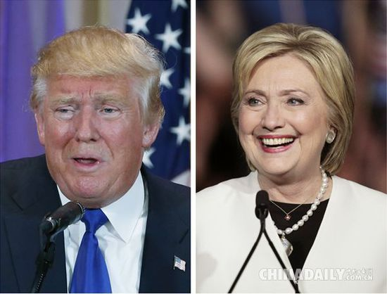

 中国日报网3月2日电 据美联社报道，美国总统大选“超级星期二”初选的所有结果出炉，共和党以及民主党分别由特朗普（Donald 巴马州、马萨诸塞州、俄克拉何马州、田纳西州、阿肯色州；克鲁兹（Ted Cruz）拿下得州；卢比欧（Marco Rubio）则拿下明尼苏达州。 民主党方面，希拉里拿下佐治亚州、弗吉尼亚州、亚拉巴马州、马萨诸塞州、田纳西州、得州以及阿肯色州；桑德兹则拿下明尼苏达州、科罗拉多州，俄克拉何马州，以及佛蒙特州。 希拉里党内领先优势明显，就把矛头指向党外的特朗普。她说：“很明显的，这场选举的重要性在今天晚上达到了前所未有的高度，而对面的声音则下跌到了闻所未闻的低潮。” 面对批评，特朗普毫不示弱，批评希拉里说：“她已经在这儿呆了很久了。要是她现在都还没有把问题想清楚的话，未来4年她照样想不明白。” 特朗普势头强劲。不少共和党内同僚忧心忡忡，担心他面对希拉里会败下阵来。资深共和党人保罗 瑞安曾经不点名批评特朗普说，“共和党不会利用人们的偏见来做文章”。特朗普以牙还牙，说瑞安如果跟自己合不来，“就得付出高昂的代价”。 为了“扳倒”特朗普，共和党内有人号召集体推举泰德 克鲁兹，让他和特朗普分庭抗礼。克鲁兹也曾公开向卢比奥等其他候选人传话说：“我请你们祈祷我们走到一起、联合起来。”不过，即便如此，特朗普仍然在共和党中遥遥领先。克鲁兹要不是保住得克萨斯州，他的竞选之旅很可能也得提前草草收场。 民主党方面，伯尼 桑德斯虽有年轻人和民主派人士力挺，但未能充分吸引非白人选民的支持，令其得票率略显逊色。相对而言，多个州有至少八成的黑人选民都投票支持希拉里；与此同时，女性和老人选民也更加支持希拉里。